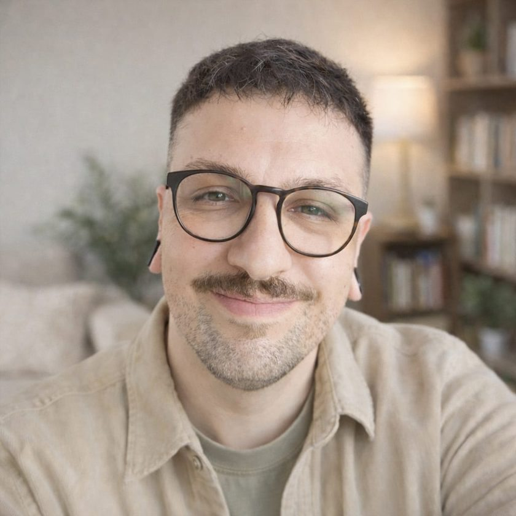
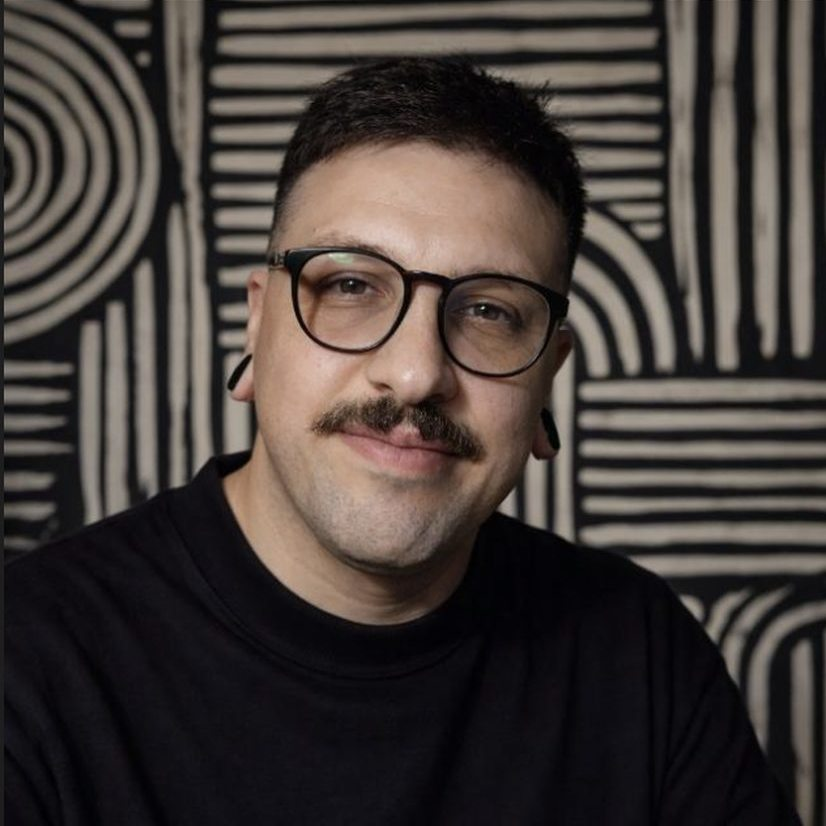

PsicólogoCid Pinheiro
Meditare a terapia
Uma visão analítico-comportamental
Atendimento psicológico para adultos e pessoas idosas. Uma escuta cuidadosa e sem julgamentos para atravessar momentos difíceis e compreender melhor a própria história.

Muitas vezes o sofrimento aparece aos poucos. No cansaço, na preocupação que não passa ou naquela sensação de que algo não vai bem, mesmo sem um nome claro para isso.
Ansiedade, preocupações que não desligam e dificuldade para relaxar.
Um desânimo ou cansaço que não passa, com perda de interesse pelas coisas.
A sensação de vazio, ou de que a vida perdeu um pouco o sentido.
Oscilações de humor difíceis de administrar no dia a dia.
Dificuldades nos relacionamentos, ou de se sentir compreendido.
Um momento de luto, mudança ou transição importante na vida.
Se você se reconheceu em algo aqui, saiba que não precisa lidar com isso sozinho. Procurar ajuda costuma ser um jeito de cuidar de si quando você percebe que a forma como vinha enfrentando as coisas já não tem funcionado como antes.

“Procuro compreender como cada dificuldade foi construída ao longo da vida, sem explicações prontas e sem reduzir ninguém a um diagnóstico.”
Sou psicólogo clínico, professor universitário e pesquisador. Minha trajetória se construiu no encontro entre psicologia, neurociências e método científico, e é isso que sustenta uma prática clínica cuidadosa, ética e atenta à história de cada pessoa.
Quando alguém me procura, encontra um espaço de escuta atenta, acolhedora e livre de julgamentos. O trabalho terapêutico busca compreender como cada dificuldade se desenvolveu ao longo da vida e ajudar você a construir formas mais flexíveis de lidar com as emoções, os relacionamentos e as escolhas do dia a dia.
Cid Pinheiro FariasPsicólogo · CRP 07/44893
Meu trabalho é orientado pela Análise do Comportamento e pela Psicoterapia Analítico-Funcional (FAP). Em termos simples: a gente procura entender como suas formas de sentir e agir foram construídas, que função elas cumprem hoje e como desenvolver caminhos que façam sentido para a sua realidade.
Um espaço seguro para observar o que você vive com mais clareza, respeitando o seu tempo e a sua história.
A gente investiga juntos os padrões que se repetem e as situações que ajudam a mantê-los, com calma e no seu ritmo.
A ideia é ampliar aos poucos a sua capacidade de compreender e lidar com o que sente, de um jeito que caiba na sua vida.
No perfil, o Cid aproxima grandes pensadores da análise do comportamento e compartilha conteúdo de divulgação científica, incluindo o podcast Entre Estímulos.
Avenida Dois, nº 105, sala 605
Parque UNA, Pelotas/RS
CEP 96075-166
O atendimento online está disponível para pessoas de todo o Brasil.
Ficou com alguma outra dúvida? Pergunte pelo WhatsApp.
Pode, sim. Muita gente chega sem conseguir dar nome ao que sente, e tudo bem. Entender isso com calma faz parte do trabalho que a gente vai fazer junto.
Você me manda uma mensagem pelo WhatsApp e combinamos o melhor dia e horário. Na primeira sessão, você conta o que te trouxe até aqui, no seu ritmo, e conversamos sobre como o acompanhamento pode funcionar para você. Você não precisa chegar com nada preparado.
As sessões online acontecem por videochamada, com a mesma duração, o mesmo sigilo e o mesmo cuidado do presencial. Basta uma conexão estável e um lugar reservado, onde você se sinta à vontade para conversar.
Não precisa. Você pode entrar em contato diretamente. Se você já faz acompanhamento psiquiátrico ou usa alguma medicação, isso pode ser conversado nas sessões e, quando fizer sentido e com a sua autorização, é possível dialogar com os outros profissionais que te acompanham.
Varia de pessoa para pessoa. Depende do que te trouxe, dos seus objetivos e do seu momento de vida. Ao longo do processo, a gente avalia junto como as coisas estão e o que faz sentido seguir trabalhando.
Sim. O sigilo é um dever ético do psicólogo, previsto no Código de Ética Profissional. O que é conversado nas sessões fica entre nós, salvo nas situações excepcionais que o próprio Código prevê.
O atendimento é particular, sem convênios. Valores e horários disponíveis eu informo pelo WhatsApp, junto com qualquer outra dúvida que você tiver.
Me mande uma mensagem no WhatsApp. Podemos conversar sobre o que você está buscando e ver, com calma, como posso ajudar.
Conversar no WhatsAppSem compromisso. No seu tempo.